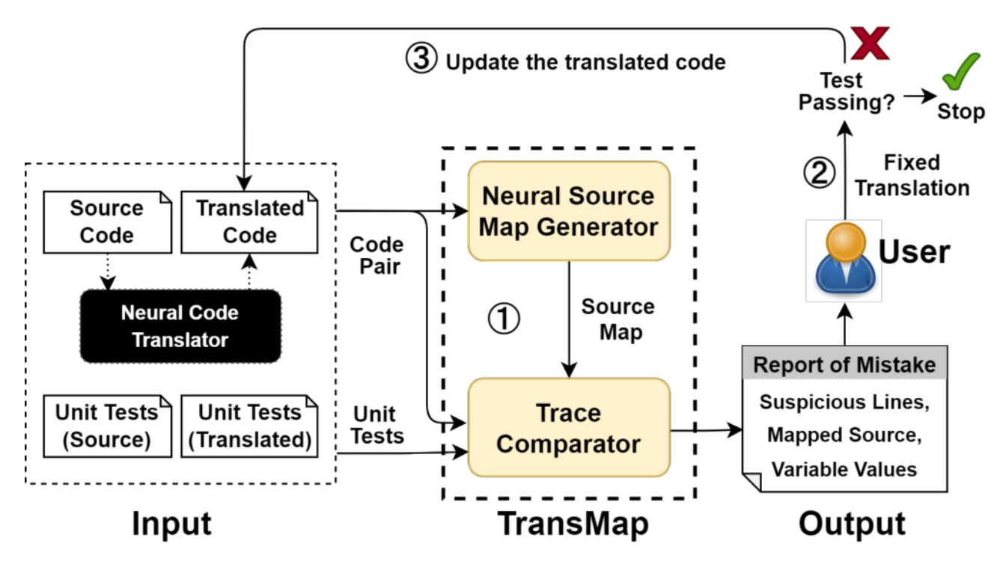

Yubo Zhang
About Me
I am a second-year Ph.D. student at Columbia University, advised by Prof. Xiaodong Wang. My research focuses on deep-learning for communication, deep-learning for optimization, integrated sensing and communication, and communication security. I also work closely with Prof. Luca Venturino and Dr. Xiao-Yang Liu.
I received my B.Eng. and M.Sc. in Information and Communication at University of Science and Technology of China (USTC), and I was fortunate to work with Prof. Chen Gong and Prof. Zhengyuan Xu there.
Research Interests
- Deep learning for large-scale systems
- Optimizations
- Integrated sensing and communication
- Communication security
Publications
-
 Arxiv 25
ArXiv Preprint (ArXiv), 2025.
Arxiv 25
ArXiv Preprint (ArXiv), 2025. -
 TCOM 25
IEEE Transactions on Communications (TCOM), 2025.
TCOM 25
IEEE Transactions on Communications (TCOM), 2025. -
 FSE 23The 31st ACM Joint European Software Engineering Conference and Symposium on the Foundations of Software Engineering (ESEC/FSE), 2023.
Teaching
- CSEE4119: Computer Networks by Prof. Ethan Katz-Bassett, Teaching Assistant, Fall 2024
Powered by Jekyll and Minimal Light theme.